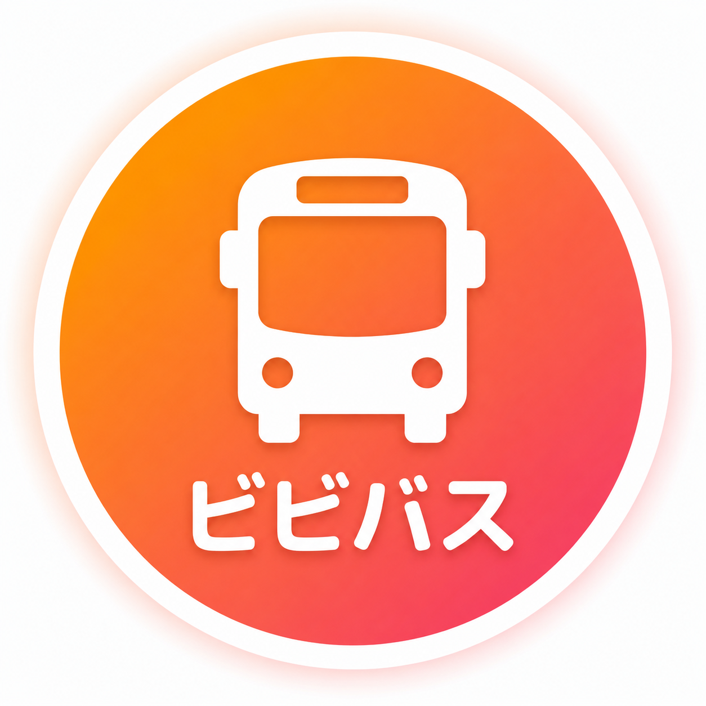

大学行き
設置場所：
-
--:--:--
系統(経由)
発車時刻
行き先
到着時刻
運行会社

スマホで
ビビバス
空港経由
00:00
あと3時間59分
千歳駅着
00:00
ウィング
⛶
⚙
表示設定
表示するバス停
表示する方向
行き（大学方面）
帰り（千歳・長都方面）
表示件数の上限（空欄で画面サイズに自動調整）
ビビバス広告の表示
表示しない
表示する（右端に表示）
設定はこの端末に保存されます。
閉じる
保存して反映